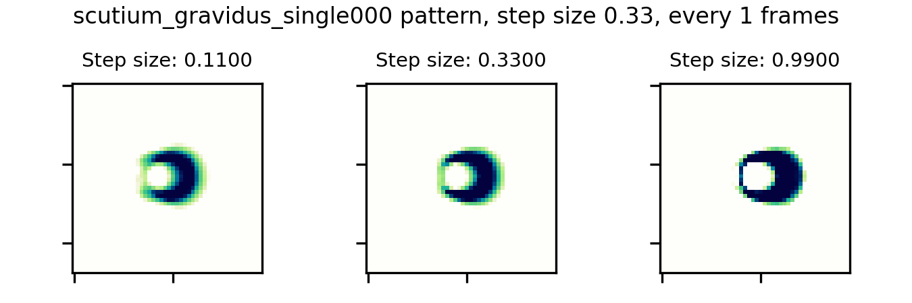

Step size is a consequential parameter
... it can be too small as well as too large

For self-organization of gliders in systems like continuous cellular automata, a step size too small can mean dissolution. Glider from Scutium gravidus in Lenia (Growth function with mu=0.283, sigma=0.0369; kernel with radius 13 and mu=0.5, sigma=0.15).